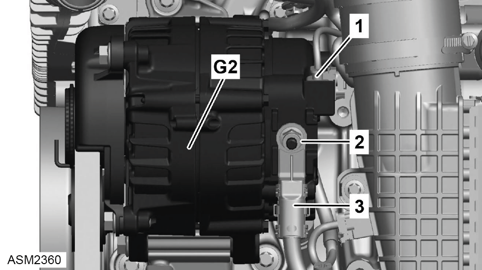
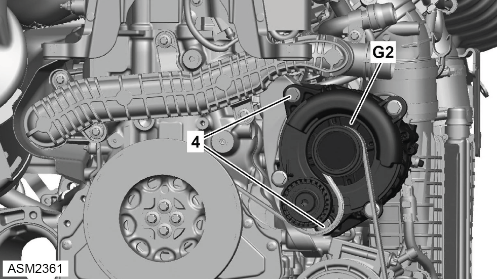
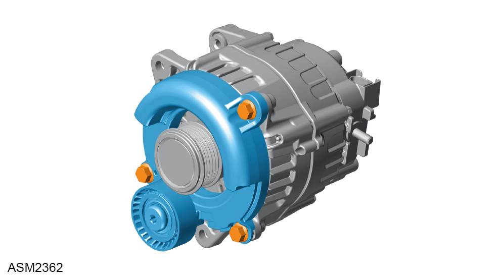

Alternator - 4 Cylinder
Print
Operation Code: 40.19.02-02
Removal
- Disconnect battery. Refer to procedure.
- Loosen auxiliary drive belt and remove from alternator pulley. Refer to procedure.
- Remove rear bulkhead access panel. Refer to procedure.

- Disconnect harness connector (1) from alternator (G2).
- Remove cover from alternator battery cable (3).
- Remove nut (2) securing securing alternator battery cable to alternator. Torque 16 Nm.
- Disconnect battery cable from alternator and move aside.

- Remove bolts (4) (x2) from alternator. Torque 20 Nm.
- Remove alternator.
Do not carry out further disassembly if component is removed for access only.

- Remove bolts (x3) securing belt tensioner to alternator. Torque 20 Nm.
- Remove belt tensioner.
Installation
- Installation is the reverse of removal procedure.